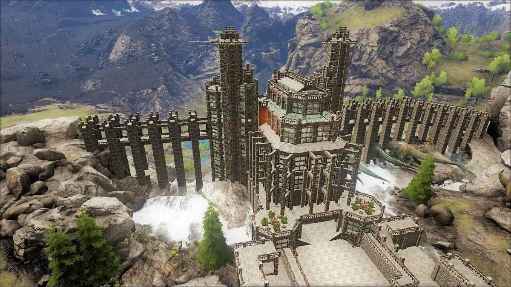

Apocalypse Survival Guide
There are not many safe Zones left in the world due to the sudden decline of humans in the food cycle. All locations outside of New Europe are known to be extremely unsafe for humans to be as Elo-Gorilla's and Gorilla-Elo's now roam the lands or Africa, Asia, Oceania, South America and North America. With the exception of a town in Western Michigan in United States where there are supposedly a few thousand people still there.
If you are in need of somewhere safe to be make sure you make your way to the New Europe region which is showcased on the info/homepage. Perferrably you should come to Nor-Fed as this is where Legion is mainly based, and you are near guarenteened safety as we have resorted to living around the various waterfalls in Norway.
Our main Waterfall outposts.